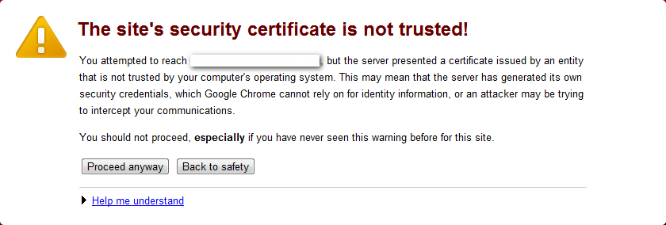
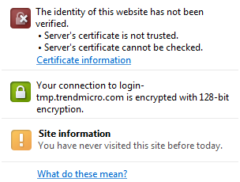

用 Selenium RC + Chrome 測試 https:// 網站時，會遇到 SSL Error：
 |
 |
When you connect to a secure website, the server hosting that site presents your browser with something called a "certificate" to verify its identity. This certificate contains identity information, such as the address of the website, which is verified by a third party that your computer trusts. By checking that the address in the certificate matches the address of the website, it is possible to verify that you are securely communicating with the website you intended, and not a third party (such as an attacker on your network).
In this case, the certificate has not been verified by a third party that your computer trusts. Anyone can create a certificate claiming to be whatever website they choose, which is why it must be verified by a trusted third party. Without that verification, the identity information in the certificate is meaningless. It is therefore not possible to verify that you are communicating with ooo.xxx.com instead of an attacker who generated his own certificate claiming to be ooo.xxx.com. You should not proceed past this point.
If, however, you work in an organization that generates its own certificates, and you are trying to connect to an internal website of that organization using such a certificate, you may be able to solve this problem securely. You can import your organization’s root certificate as a "root certificate", and then certificates issued or verified by your organization will be trusted and you will not see this error next time you try to connect to an internal website. Contact your organization’s help staff for assistance in adding a new root certificate to your computer.
Certificate 的內容如下：
|
|
這個時候用 RC API get_html_source() 傳回的不像 IE 是這個警告畫面的 source，也就是說 Chrome 並沒有換掉網頁的內容，只是拿另一個畫面擋在前面而已。另外一開始 Selenium 開出來的 Chrome 視窗是看不到的（縮在桌面的左上方），要調整視窗大小或是 "Show as tab" 才看得到。 |
遇到這種狀況，只要讓系統信任 CyberVillians 即可，在 Windows 下可以這麼做：
-
解開
selenium-server-standalone-<version>.jar取得sslSupport/cybervillainsCA.cer。 -
將
cybervillainsCA.cer加到 Trusted Root Certification Authorities。
之後就可以正常瀏覽 https:// 了，Selenium Server 啟動時也不用加 -trustAllSSLCertificates。不過下面 "Couldn’t proxy to … because host not found" 的訊息，在某些機器上還是會出現：
11:44:41.867 INFO - Launching Google Chrome...
11:44:41.992 INFO - Couldn't proxy to http://vtlwjmussv/ because host not found
11:44:41.992 INFO - Couldn't proxy to http://rezujlojan/ because host not found
11:44:41.992 INFO - Couldn't proxy to http://mmowlbwfel/ because host not found|
|
2012-07-17 搭配 Selenium Server 2.23.1 在某台 XP 下遇到 CPU 100% 的問題（最後出現 Error 7 (net::ERR_TIMED_OUT): The operation timed out. 的錯誤），按這裡的說法，將 Selenium Server 降到 2.19.0 有改善，但操作起來還是比沒問題的機器慢很多… |
如果原本這個 certificate 不只不受信任，而且遇有其他問題的話（例如主機名稱與宣稱的不符），緊接著還會遇到下面的錯誤：
HTTP ERROR: 400
Could not proxy https://ooo.xxx.com:443/...
java.lang.RuntimeException: Couldn't establish SSL handshake. Try using trustAllSSLCertificates.
sun.security.validator.ValidatorException: PKIX path building failed: sun.security.provider.certpath.SunCertPathBuilderException: unable to find valid certification path to requested target
RequestURI=/ooo/xxx
Powered by Jetty://還好只要按指示在啟動 Selenium Server 加上 -trustAllSSLCertificates 即可。
參考資料
-
Issue 3498 - selenium - Selenium’s proxy server performance regression for HTTPS pages - Browser automation framework - Google Project Hosting (2012-03-05) - 跟某些機器上會出現 CPU 100% 的狀況很類似，從 2.20 開始…
-
Unable to open HTTPS sites in Google Chrome using SeleniumRC - Google Groups (2011-05-23) - 出現 "Error 111 (net::ERR_TUNNEL_CONNECTION_FAILED): Unknown error." 的錯誤，有人建議裝
cybervillainsCA.cer。 -
How can I remote control an https site in google chrome through Selenium RC - Stack Overflow (2011-04-29) - 加
-trustAllSSLCertificates? -
Issue 1317 - selenium - HTTPS support for Google Chrome - Browser automation framework - Google Project Hosting (2011-02-18) - 修了，但要加
-trustAllSSLCertificates。 -
Mogotest | How to Accept Self-Signed SSL Certificates in Selenium (2010-04-13) - 對 proxy server 跟 proxy injection mode 有很完整的說明。